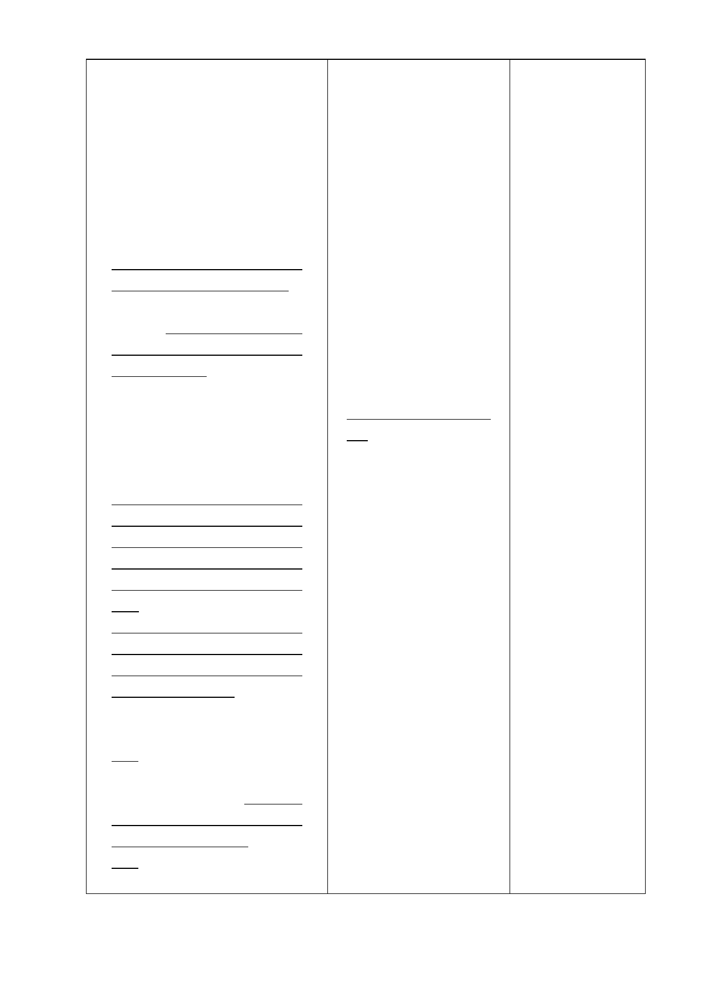

(二)申請開發許可基地應臨接既
有出入道路或都市計畫道路，建築
基地臨接之面前道路為行義路300
巷、402巷者，其道路寬度不足8公
尺部分至少須退縮補足道路寬度
達8公尺以上，其餘道路則至少須
退縮補足道路寬度達6公尺以上，
建築物主要出入口與面前道路轉
彎處之距離至少應達15公尺以上。
1. 前 開 配 合 細 部 計 畫 規 定 須 新
闢設及退縮留設道路之土地，不
得設置屋簷、雨遮、圍牆或其他
障礙物。除本府協助開闢之行義
路300巷、402巷外，餘須自行闢
設供公眾通行。但因地形限制或
為原有合法建築物，已無法再退
縮建築，並經交通、消防主管機
關認定無礙行車動線、會車安
全、及救災避難者不在此限。但
道路最小寬度仍應超過4公尺。
2. 前 開 配 合 細 部 計 畫 規 定 須 新
闢設及退縮留設道路之土地如
屬公有土地，依相關規定辦理無
償撥用；如屬私有土地須捐贈臺
北市政府所有，並得扣抵回饋
金。
3. 其 捐 贈 本 府 而 得 扣 抵 回 饋 金
之土地，須納入個別開發案之主
要計畫範圍內，惟不予變更為溫
泉產業特定專用區。
肆、回饋
一、申請開發基地於申請本案開
發許可核定，於領取建造執照前
應完成回饋金之繳納及完成新
闢設及退縮留設道路之私有土
地捐贈予臺北市政府。
二、回饋金係以獲准開發之申請
基地全區土地當年度公告現值
(二)申請開發許可基地
應臨接既有出入道路或
都市計畫道路，建築基地
臨接之面前道路為行義
路300巷、402巷者，其道
路寬度不足8公尺部分至
少須退縮補足道路寬度
達8公尺以上，其餘道路
則至少須退縮補足道路
寬度達6公尺以上，建築
物主要出入口與面前道
路轉彎處之距離至少應
達15公尺以上。其退縮部
分自行闢設供公眾行人
通行，不得設置屋簷、雨
遮、圍牆或其他障礙物，
並無償捐贈臺北市所
有。但因地形限制或為原
有合法建築物，已無法再
退縮建築，並經交通、消
防主管機關認定無礙行
車動線、會車安全、及救
災避難者不在此限。但道
路最小寬度仍應超過4公
尺。
經檢視行義路300
巷、402巷開闢範
圍可能行經之土
地多為國有土
地，僅少部分土地
係屬私人產權，因
國有土地囿於現
行法規無法捐
贈，將造成僅少數
業者須負擔此項
開發義務，故為確
保本計畫區內配
合新闢設及退縮
留設道路之私有
土地可供公眾通
行及考量開發許
可回饋負擔之公
平性，修訂前開私
有之道路土地之
捐贈得扣抵回饋
金。
肆、回饋
申請開發基地於申請本
案開發許可核定，於領
取建造執照前應完成回
饋金之繳納。有關回饋
計算基準係以獲准開發
之申請基地全區土地當
年度公告現值總和之20
-4-
配合修訂回饋
金之計算公
式。